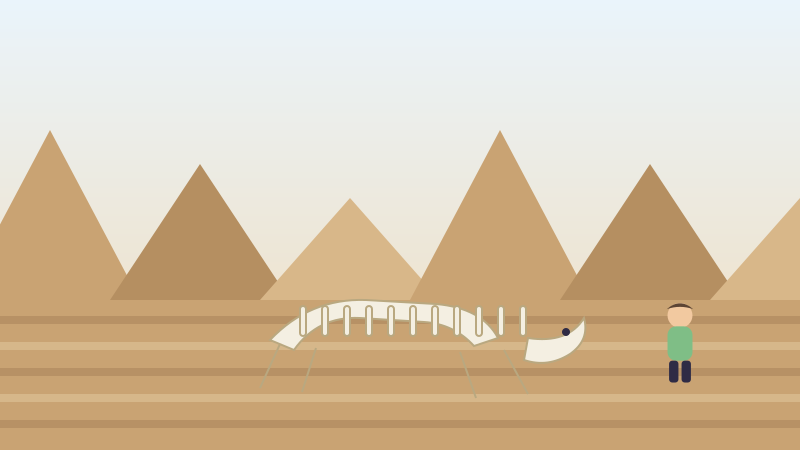
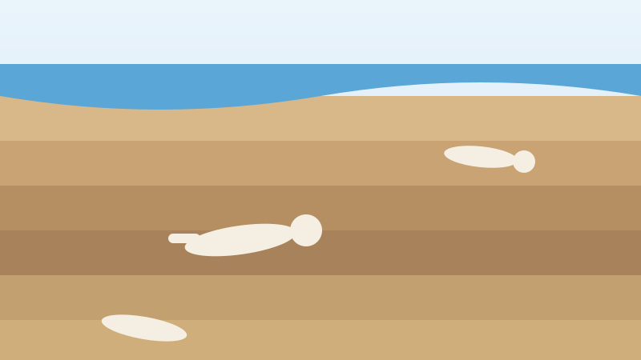

🦕 Pour les enfants
La vallée de l'Alberta pleine de dinosaures
Il y a en Alberta un endroit où l'on peut marcher et voir un vrai os de dinosaure sortir du sol.

Un endroit étrange, magnifique et désert
Dans le sud-est de l'Alberta, le long de la rivière Red Deer, la prairie plate s'ouvre soudain sur un labyrinthe de collines nues, de ravins et de tours de pierre. On appelle cela les badlands.
Presque rien n'y pousse, et c'est justement ce qui compte. Sans herbe ni arbres, la roche est exposée à la pluie et au vent.
C'est le parc provincial Dinosaur, si important que le monde entier a convenu de le protéger. Il est devenu site du patrimoine mondial de l'UNESCO en 1979.
Pourquoi il y a tant d'os au même endroit
Il y a environ 75 millions d'années, ce n'était pas sec du tout. De grandes rivières lentes serpentaient dans une terre chaude, verte et basse, au bord d'une mer peu profonde.
Quand un animal mourait près d'une rivière, le sable et la boue le recouvraient rapidement. C'est le secret d'un bon fossile : être enterré vite, avant que quoi que ce soit ne disperse les os.
Des millions d'années de sable et de boue se sont transformées en couches de roche, l'une par-dessus l'autre, avec les animaux à l'intérieur. Puis la terre s'est asséchée et soulevée, et les rivières et la pluie ont commencé à la rouvrir.
Chaque grosse pluie dans ce parc en découvre donc un peu plus. Les fossiles n'y sont pas tant trouvés que dévoilés.

Ce qu'on y a trouvé
Plus de quarante espèces différentes de dinosaures sont sorties de ce seul parc, avec des centaines de squelettes. Ils sont dans des musées du monde entier.
L'un d'eux porte le nom de la province. En 1884, un homme nommé Joseph Burr Tyrrell cherchait du charbon le long de la rivière Red Deer et a plutôt trouvé un crâne de dinosaure. Il appartenait à un carnivore qu'on appelle aujourd'hui l'albertosaure.
Un grand musée de la ville de Drumheller porte son nom. Il a ouvert en 1985 et c'est l'un des grands musées de dinosaures au monde.
Drumheller possède aussi une statue de tyrannosaure de 26 mètres de haut dans laquelle on peut monter. Elle n'est pas à la bonne taille. Elle est environ quatre fois et demie plus grosse qu'un vrai T. rex, et cela fait partie du plaisir.
Si vous y allez un jour
On ne peut pas creuser, ni rien rapporter chez soi. Un fossile en dit bien plus aux scientifiques quand ils voient exactement de quelle couche il vient, et un os dans une poche a perdu cela pour toujours.
Si vous repérez un os, la bonne chose à faire est de le laisser exactement où il est et d'avertir un employé du parc. Des enfants ont découvert d'importants fossiles ainsi.
Des mots à connaître
- Fossile
- La forme d'une plante ou d'un animal transformée en pierre après très longtemps.
- Badlands
- Des collines sèches, nues et friables, où la roche n'est pas couverte de plantes.
- Paléontologue
- Un scientifique qui étudie les fossiles et les êtres vivants dont ils proviennent.
Essaie maintenant trois questions
Pas de chronomètre et aucune note à craindre. Chaque réponse t'explique pourquoi.
À propos de ce quiz
Cette histoire explique pourquoi le parc provincial Dinosaur, en Alberta, renferme tant de dinosaures, comment des rivières d'il y a 75 millions d'années les ont enfouis, ce qu'on y a trouvé, et quoi faire si vous voyez un jour un os dans le sol.
Elle est écrite en phrases courtes pour les enfants de six à neuf ans, avec une image dessinée pour ce site et trois questions à la fin. Touchez le bouton de lecture à voix haute et la page lira les questions à haute voix.